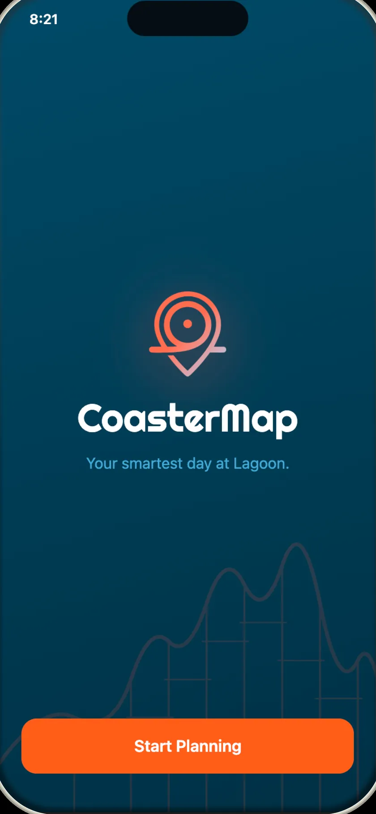

CoasterMap
CoasterMap is a park-day planner meant for every theme park, not one. The product is the partnerships: sign up enough parks and it becomes the map you open at any gate, instead of a different app downloaded at each one.
Lagoon, in Farmington, is the park it is designed against. A day there is mostly spent guessing: which rides are open, how long the line is, whether there is time for one more before the train home. The app answers those three questions on one screen and then plans around them.
Try it
Nine screens, wired together the way the prototype runs. Tap the train card, a ride, or the button that builds the day, and the tab bar moves between them. Turn on Show taps if you would rather see where the taps are than hunt for them.

Start screen
What it does
The home screen leads with the countdown to the next FrontRunner train, then what is open right now and how long each wait is. A ride page carries the wait, the height requirement, the thrill level and how far the walk is, with one button to add it to the plan.

Telling the app how long you have, who you are with and what you care about produces a timeline for the day: rides, breaks, and the walk back to the station in time for a specific train. If a ride closes while you are there, the plan offers a swap instead of falling apart.

Details that come from the place
Lagoon is outdoors in the summer, so the wait chips use three colors that still read in bright sun rather than small grey type. Getting there matters as much as the rides: the train screen shows northbound and southbound departures and will set a reminder, because the last train is a hard deadline on the day. An activity view tracks steps, distance and water, since a park day is a long walk whether or not you planned one.
Those are Lagoon's particulars. The next park brings its own — a different way in, a different thing that ruins an afternoon — and finding them is the work a partnership has to pay for.

The app icon
The icon is a map pin drawn as a coaster loop. I made a version for each of the appearances iOS uses, so it holds up in light mode, dark mode and the clear style.
Where it stands
This is a designed prototype, not a shipped app. The click-through at the top is real — those are the screens and the paths between them — but the ride waits, train times and step counts are designed data, and the planning logic is described rather than running. The screens come from the launch kit I put together to present it. One park is designed; the argument is that the same screens fit the next one.